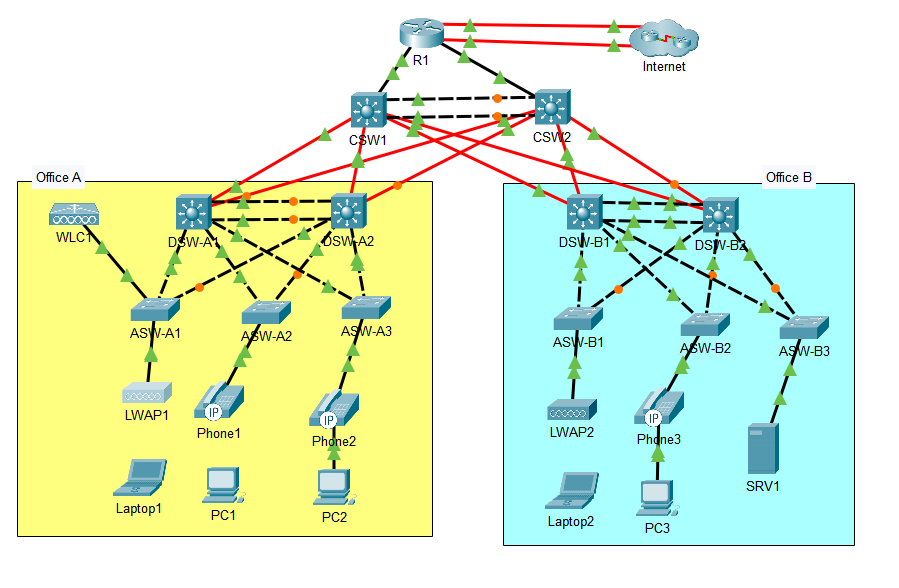

Networking Project: Large Warehouse Connectivity

Designed and implemented a robust Layer 2/Layer 3 network topology to ensure seamless connectivity, supporting both wired and wireless operations in a dynamic warehouse environment. Configured VLANs, trunking, NAT, and OSPF routing across multiple devices.